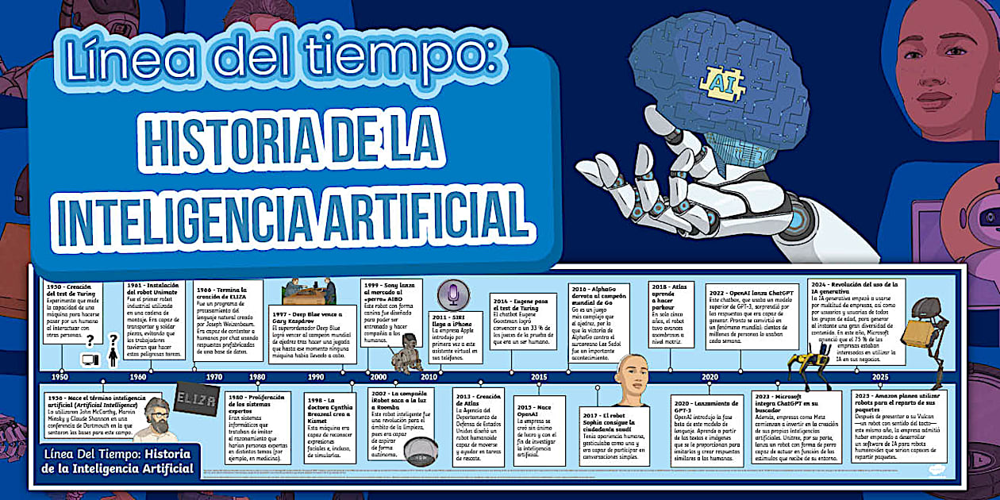

Índice
|
1. Los orígenes: ideas y primeros conceptos (Antigüedad - años 40)Desde hace siglos ya existía la idea de crear seres artificiales inteligentes. En la mitología griega aparecían autómatas mecánicos, y durante la Edad Media se construyeron máquinas simples que imitaban movimientos humanos. En el siglo XIX, el matemático Ada Lovelace imaginó que las máquinas podrían ir más allá de hacer cálculos y llegar a “crear” música o arte. Más tarde, durante la Segunda Guerra Mundial, Alan Turing desarrolló ideas fundamentales sobre computación. En 1950 propuso el famoso “Test de Turing”, una prueba para saber si una máquina podía comportarse como un ser humano en una conversación.
|
2. Nacimiento oficial de la IA (1956)La Inteligencia Artificial nació oficialmente en 1956, en la Conferencia de Dartmouth, organizada por científicos como John McCarthy, quien acuñó el término “Artificial Intelligence”. Los investigadores pensaban que en pocas décadas las máquinas podrían pensar como personas. Se desarrollaron programas capaces de resolver problemas matemáticos o jugar al ajedrez. |
|
3. Primeros avances y entusiasmo (años 60-70)En esta etapa aparecieron:
También surgieron los primeros chatbots, como ELIZA, que simulaba conversaciones con un psicólogo. Sin embargo, las computadoras eran muy lentas y había poca capacidad de almacenamiento, por lo que muchas expectativas no pudieron cumplirse. |
4. Los “inviernos de la IA” (años 70 y 80)Se llama “invierno de la IA” a los periodos en los que se redujo mucho la financiación y el interés por la IA porque los resultados no eran tan buenos como se esperaba. Muchos proyectos fracasaron y la investigación avanzó lentamente. |
|
5. Renacimiento de la IA (años 90)La mejora de los ordenadores permitió nuevos avances:
En 1997 ocurrió un hecho histórico: la supercomputadora Deep Blue, creada por IBM, venció al campeón mundial de ajedrez Garry Kasparov. |
6. La revolución del siglo XXICon internet y el aumento masivo de datos, la IA evolucionó rápidamente gracias al:
Aparecieron asistentes virtuales, reconocimiento facial, traductores automáticos y algoritmos de recomendación. Empresas como Google, Microsoft, OpenAI y Meta impulsaron enormemente esta tecnología. |
|
7. La IA actual (2020 en adelante)Hoy existen modelos capaces de:
Herramientas como ChatGPT popularizaron la IA generativa, capaz de producir texto, imágenes o música. También han surgido debates importantes sobre:
|
 |